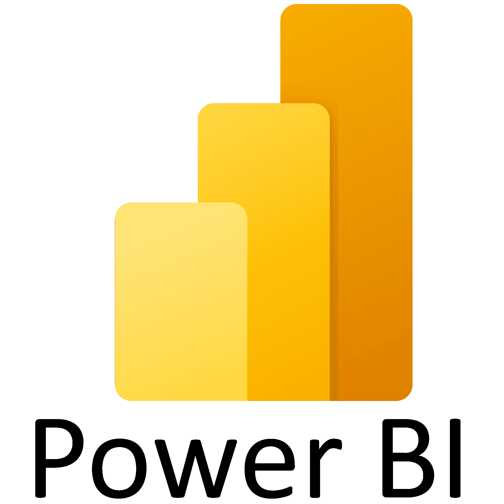
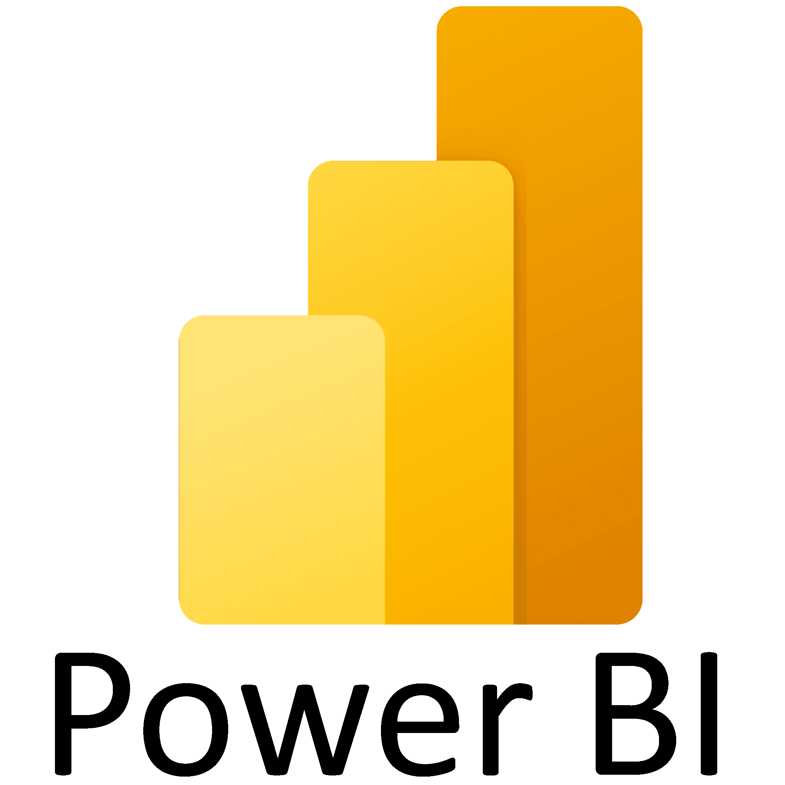
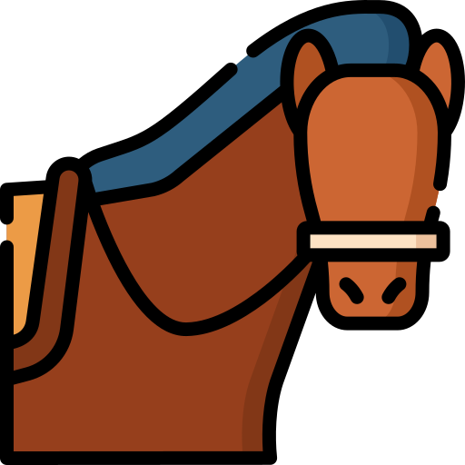
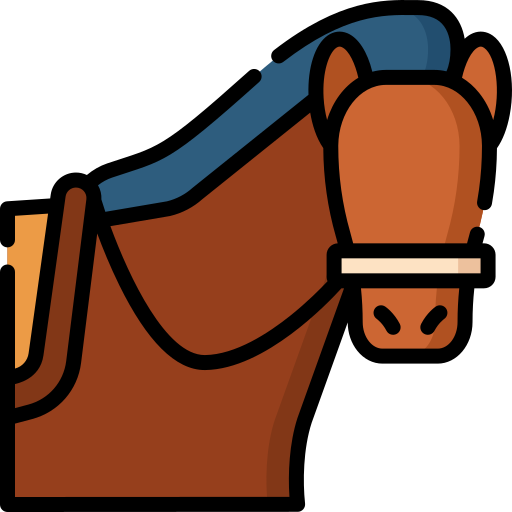
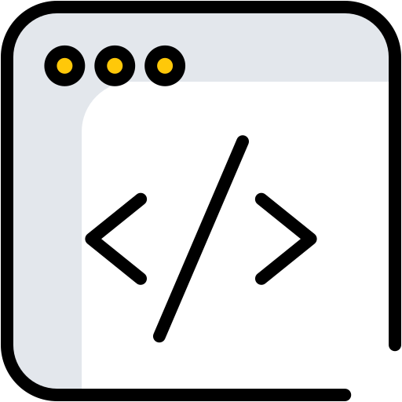
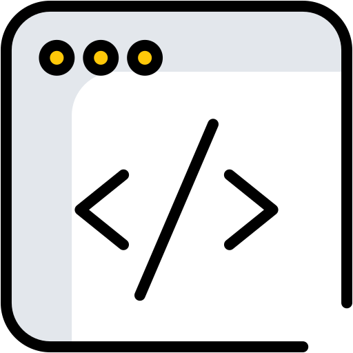

Pierre PELERIN
Développeur Full-Stack
PROFIL PERSONNEL
Passionné par les technologies et l'innovation, je me reconvertis dans le développement web après une solide expérience en gestion de projets et analyse technique. Curieux et rigoureux, je mets mon expertise au service de la création de solutions digitales performantes. En formation continue sur les technologies web, je consolide mes compétences à travers des projets concrets, notamment en HTML, CSS, PHP et JavaScript.
EXPERIENCES PROFESSIONNELLES
Responsable Projets
- Gestion et pilotage des projets stratégiques et investissements
- Accompagnement des équipes à l’utilisation de PowerBI et ChatGPT
- Migration et déploiement de l’ERP Microsoft BC : lien entre l’entreprise et les développeurs, tests des nouvelles fonctionnalités
- Mise en place d’indicateurs de suivi et de tableaux de bord décisionnels pour la direction
Contact : Hugues Schellenberg, Directeur Général : 06 72 76 48 41 ; h.schellenberg@dollfus-muller.com
Directeur Technique
- Supervision des départements R&D, production, logistique et informatique
- Management d’équipes pluridisciplinaires, structuration des méthodes de travail et montée en compétences
- Gestion des coûts, délais et qualité des projets industriels
- Optimisation des processus et outils numériques
Ingénieur R&D
- 2010 – 2017 : Support R&D pour l’entreprise
- 2014 – 2017 : Responsable innovation
- 2016 – 2017 : Responsable informatique
Ingénieur R&D
Technicien R&D
FORMATION
- Développement informatique (sites web dynamiques, bases de données, intégration graphique, ...)
- Travail en mode projet selon les schémas et normes en vigueur dans les entreprises du numérique
 2009 - Ingénieur Mécanique – ENSISA | Ecole Nationale Supérieure d’Ingénieurs Sud Alsace (68)
2009 - Ingénieur Mécanique – ENSISA | Ecole Nationale Supérieure d’Ingénieurs Sud Alsace (68)
- Ingénierie des systèmes : modélisation et analyse de systèmes complexes
- Solide capacité d’analyse et de résolution de problèmes via des projets techniques
2006 - DUT Sciences et Génie des Matériaux – IUT de Mulhouse (68)
COMPETENCES
Techniques
Front-end


Intégration responsive, Flexbox, Grid, formulaires, accessibilité

DOM, événements, logique applicative, mini-applications

Personnalisation de thèmes, CSS sur mesure, structure de pages, contenus dynamiques
Back-end

Programmation serveur, formulaires, logique applicative

Requêtes, bases relationnelles
Outils et data


 

Transversales
- Gestion de projets et innovation
- Analyse technique et amélioration continue
- Travail en équipe et formation des collaborateurs
- Communication et vulgarisation technique
- Autonomie et sens de l’organisation
- Adaptabilité et résolution de problèmes
LANGUES
Langue maternelle
Intermédiaire (B2)
 Notions
Notions
CERTIFICATIONS
2025 – ANSSI – MOOC SecNumacadémie Cybersécurité – 93%
- Analyse des risques et modélisation des menaces
- Principes de sécurité, Protection des données et conformité
2024 – Programme WeCount – Référent Bilan Carbone
- Pilotage du projet Bilan Carbone pour l’entreprise, coordination de la collecte de données
- Élaboration d’un plan d’actions de réduction des émissions de CO₂
2018 – 2019 – GERME – Cycle Emergence Management opérationnel
- Animation et cohésion d'équipe, gestion des situations difficiles
- Feedback et amélioration continue, intelligence collective et codéveloppement
CENTRES D'INTERET
 

 

PROJETS & PORTFOLIO
Portfolio complet disponible sur https://pierrepelerin.github.io/
Conception et développement du site web EWF – Équitation Western France (full stack)
- Développement full stack – HTML / CSS / PHP / MySQL
- Implémentation d’un moteur d’articles dynamique et d'une carte interactive
- Développement d’un design personnalisé (branding cohérent et identité visuelle forte)
- Approche orientée utilisateur (lecture fluide, navigation intuitive)
Gestion de la page Facebook EWF – Équitation Western France
- Animation d’une communauté autour de la filière équitation western (+ 2000 abonnés, + 10 000 vues par jour)
- Création de contenus éditoriaux (interviews, actualités, mises en avant de professionnels)
- Planification des publications et optimisation de l’engagement
Projets techniques et expérimentations
- Réalisation de mini-projets techniques pour expérimenter et maîtriser différentes fonctionnalités (DOM, logique conditionnelle, interactions utilisateur, gestion des données, Bootstrap)
- Développements JavaScript : création d’un jeu interactif, et animation de balles (logique métier, gestion des événements, animations dynamiques)
- Développement PHP : implémentation d’un algorithme de résolution de Sudoku

© 2026 Pierre PELERIN
Dernière mise à jour : 20/02/2026
Réalisé en HTML / CSS / JS – Responsive design